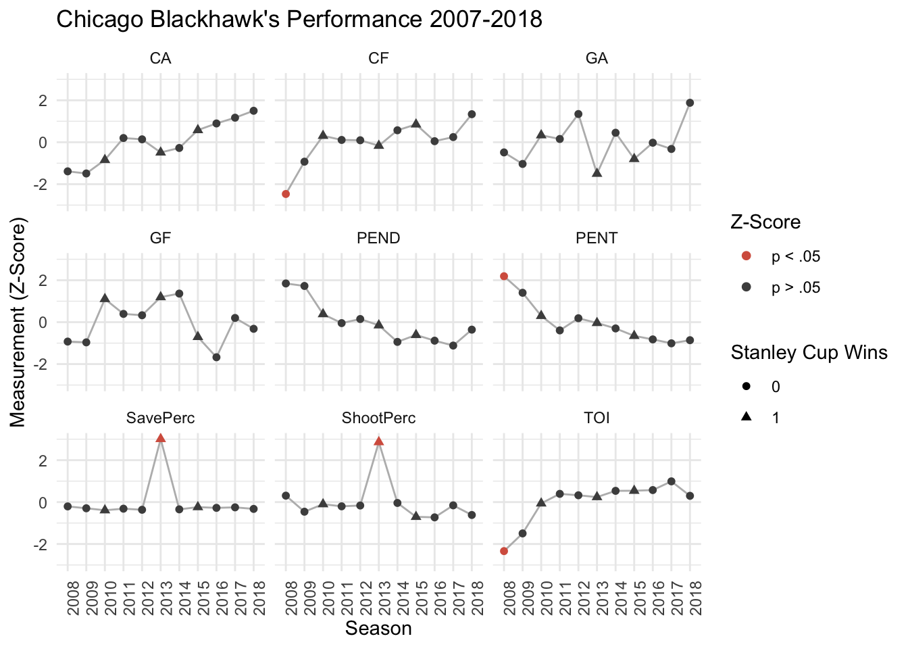
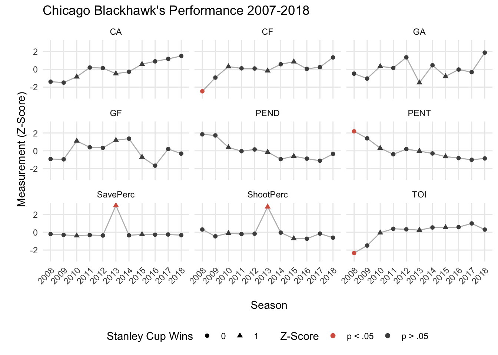

Here are the packages that we’ll use for these analyses and to style the output/plots.
# Packages ----
library(tidyverse) # For data manipulation, plotting, etc. ## ── Attaching packages ───────────────────────────────────────────────────────────────────────────── tidyverse 1.2.1 ──## ✔ ggplot2 3.1.0 ✔ purrr 0.3.0
## ✔ tibble 2.0.1 ✔ dplyr 0.7.8
## ✔ tidyr 0.8.2 ✔ stringr 1.4.0
## ✔ readr 1.3.1 ✔ forcats 0.3.0## ── Conflicts ──────────────────────────────────────────────────────────────────────────────── tidyverse_conflicts() ──
## ✖ dplyr::filter() masks stats::filter()
## ✖ dplyr::lag() masks stats::lag()library(RCurl) # To import data on github## Loading required package: bitops##
## Attaching package: 'RCurl'## The following object is masked from 'package:tidyr':
##
## completelibrary(TInPosition) # PCA tools## Loading required package: prettyGraphs## Loading required package: TExPosition## Loading required package: ExPosition## Loading required package: InPositionlibrary(ggrepel) # Plotting tool for ggplot2
library(kableExtra) # HTML table tools
library(RColorBrewer) # Nice plotting colors
# Custom functions ----
# nice_table() simplifies the printing of HTML tables using kable
nice_table <- function(x){
kable(x) %>%
kable_styling(bootstrap_options = c('striped', 'hover', 'responsive'))
}
# Color palettes ----
rdgy <- brewer.pal(n = 11, name = "RdGy") # display.brewer.pal(11, "RdGy")Let’s first prepare the data for analysis. These data were downloaded from Corsica’s team stats tool. We’ve prepared these data for you and are available for import into R like this:
# Link to raw data on Github
link <- "https://raw.githubusercontent.com/mkmiecik14/mkmiecik14.github.io/master/data/nhl-team-data-corsica.csv"
# reads in data from Github
nhl_data <- read_csv(file = getURL(link))To make things as simple as possible, without losing information, we’ll use Chicago Blackhawk’s data from the 2007-2008 season up through the 2017-2018 season (11 years of data) and only a subset of the available metrics. These include:
# Preparing Hawks data ----
hawks_data <- nhl_data %>%
select(Team:CA, GF, GA, PENT, PEND, ShootPerc = `Sh%`, SavePerc = `Sv%`) %>%
filter(Team == "CHI") %>%
separate(Season, into = c("Start_Year", "Season")) %>%
mutate(Team = NULL,
Start_Year = NULL,
Season = as.numeric(Season)
)
# Prints data
nice_table(hawks_data)| Season | GP | TOI | CF | CA | GF | GA | PENT | PEND | ShootPerc | SavePerc |
|---|---|---|---|---|---|---|---|---|---|---|
| 2008 | 80 | 3423.00 | 2600 | 2629 | 143 | 130 | 368 | 365 | 9.04 | 91.92 |
| 2009 | 82 | 3646.73 | 3286 | 2655 | 146 | 124 | 335 | 368 | 7.45 | 92.42 |
| 2010 | 82 | 3881.33 | 3784 | 2907 | 178 | 147 | 276 | 299 | 8.30 | 90.53 |
| 2011 | 82 | 3955.85 | 3704 | 3314 | 167 | 144 | 239 | 277 | 8.06 | 92.03 |
| 2012 | 82 | 3944.77 | 3698 | 3290 | 166 | 164 | 270 | 287 | 8.15 | 90.99 |
| 2013 | 48 | 2300.80 | 2103 | 1783 | 105 | 68 | 151 | 159 | 8.97 | 92.94 |
| 2014 | 82 | 3979.35 | 3890 | 3129 | 182 | 149 | 244 | 231 | 8.44 | 91.39 |
| 2015 | 82 | 3980.10 | 4003 | 3462 | 150 | 128 | 225 | 248 | 6.87 | 93.54 |
| 2016 | 82 | 3985.37 | 3680 | 3585 | 135 | 141 | 216 | 234 | 6.81 | 92.81 |
| 2017 | 82 | 4053.47 | 3759 | 3692 | 164 | 136 | 206 | 222 | 8.17 | 93.31 |
| 2018 | 82 | 3940.41 | 4199 | 3821 | 156 | 173 | 214 | 261 | 7.08 | 91.82 |
Let’s also prepare a table of notable events of every year in this data set for the Chicago Blackhawks, including their Stanley Cup wins (3) and their playoff success:
# Initializing Chicago Blackhawks notable events table ----
# SCW = Stanley Cup Wins
# PF = Playoff Finish:
# 0 = Did not make playoffs
# 1 = Lost in first round
# 2 = Lost in second round
# 3 = Lost in conference finals
# 4 = Lost in Stanley Cup final
# 5 = Won Stanley Cup
hawks_events <- tibble(Season = hawks_data$Season,
SCW = factor(c(0, 0, 1, 0, 0, 1, 0, 1, 0, 0, 0)),
PF = factor(c(0, 3, 5, 1, 1, 5, 3, 5, 1, 1, 0))
)Prior to exploring these data and how they’ve changed over time, we have to:
# Preprocesses, adjusts, and z-scores hawks data ----
hawks_data_long <- hawks_data %>%
gather(Meas, Val, -Season, -GP) %>%
group_by(Meas) %>%
mutate(Val_Adj = Val/GP, # adjusts based on games played
Val_Zscore = scale(Val_Adj) # computes z-scores
) %>%
ungroup() %>%
mutate(sig = factor(ifelse(abs(Val_Zscore) > 1.96, "p < .05", "p > .05"))) %>% # z score > 1.96
inner_join(., hawks_events, by = "Season") # adds notable hawks events
# Plots all measures together ----
ggplot(hawks_data_long, aes(factor(Season), Val_Zscore)) +
geom_path(aes(group = 1), color = rdgy[8]) +
geom_point(aes(color = sig, shape = SCW), size = 1.75) +
scale_color_manual(values = c(rdgy[3], rdgy[10]), name = "Z-Score") +
scale_shape_discrete(name = "Stanley Cup Wins") +
theme_minimal() +
labs(x = "Season",
y = "Measurement (Z-Score)",
title = "Chicago Blackhawk's Performance 2007-2018"
) +
facet_wrap(~Meas, nrow = 3) +
theme(axis.text.x = element_text(angle = 90, hjust = 1))
# adjust metric
hawks_data_adj <- hawks_data %>%
rowwise() %>%
mutate(GP_adj = TOI/GP,
CF_adj = CF/GP,
GF_adj = GF/GP,
GA_adj = GA/GP,
PENT_adj = PENT/GP,
PEND_adj = PEND/GP,
ShootPerc_adj = ShootPerc/GP,
SavePerc_adj = SavePerc/GP) %>%
ungroup() %>%
select(Season, contains("_adj")) %>%
inner_join(., hawks_events, by = "Season") %>%
apply(., 2, as.numeric) %>%
apply(., 2, scale)
# correlation matrix
hawks_cor_mat <- cor(hawks_data_adj)
# convert to long format
hawks_cor_long <- hawks_cor_mat %>%
reshape2::melt() %>%
arrange(Var1, Var2)
# heatmap
ggplot(hawks_cor_long, aes(x = Var1, y = Var2, fill = value)) +
geom_raster() +
labs(x = element_blank(),
y = element_blank(),
fill = "Correlation") +
theme_minimal() +
theme(axis.text.x = element_text(angle = 45, hjust = 1)) +
scale_fill_distiller(palette = "RdBu", limits = c(-1,1))
hawks_data_mat <- as.matrix(hawks_data[2:ncol(hawks_data)])
rownames(hawks_data_mat) <- hawks_data$Season
hawks_data_svd <- svd(hawks_data_mat)
svd_d <- hawks_data_svd$d
round(svd_d, 3) %>% as.matrix() %>% t() %>% nice_table()| 20192.24 | 748.162 | 623.018 | 157.602 | 46.409 | 38.018 | 24.96 | 18.733 | 1.395 | 0.148 |
svd_u <- hawks_data_svd$u
round(svd_u, 3) %>% nice_table| -0.250 | -0.448 | 0.627 | 0.302 | -0.187 | -0.149 | 0.277 | -0.147 | -0.126 | 0.205 |
| -0.277 | -0.455 | -0.119 | 0.345 | 0.401 | 0.286 | -0.084 | 0.007 | -0.016 | -0.461 |
| -0.305 | -0.292 | -0.440 | -0.016 | -0.157 | 0.053 | -0.231 | -0.046 | -0.108 | 0.691 |
| -0.315 | -0.009 | 0.044 | -0.131 | -0.018 | 0.068 | -0.664 | -0.133 | -0.209 | -0.194 |
| -0.314 | -0.036 | 0.032 | 0.040 | -0.399 | -0.010 | -0.116 | 0.353 | 0.766 | -0.114 |
| -0.178 | -0.145 | -0.036 | -0.232 | 0.449 | -0.797 | -0.036 | 0.228 | 0.046 | 0.000 |
| -0.317 | -0.132 | -0.349 | -0.368 | -0.409 | -0.062 | 0.471 | -0.041 | -0.283 | -0.382 |
| -0.328 | 0.179 | -0.194 | 0.011 | 0.457 | 0.224 | 0.407 | -0.257 | 0.328 | 0.208 |
| -0.322 | 0.215 | 0.318 | -0.258 | 0.167 | 0.351 | 0.086 | 0.639 | -0.288 | 0.149 |
| -0.329 | 0.269 | 0.339 | -0.347 | 0.005 | -0.024 | -0.109 | -0.553 | 0.121 | -0.044 |
| -0.342 | 0.562 | -0.137 | 0.627 | -0.123 | -0.274 | 0.006 | 0.037 | -0.232 | -0.053 |
svd_v <- hawks_data_svd$v
round(svd_v, 3) %>% nice_table| -0.013 | -0.024 | 0.011 | 0.032 | 0.011 | 0.001 | 0.052 | -0.016 | -0.996 | 0.049 |
| -0.618 | -0.656 | 0.260 | -0.332 | 0.004 | 0.075 | -0.045 | 0.048 | 0.013 | 0.001 |
| -0.586 | 0.170 | -0.779 | 0.138 | 0.024 | -0.002 | 0.039 | -0.007 | 0.002 | 0.002 |
| -0.519 | 0.635 | 0.554 | 0.132 | 0.000 | -0.030 | 0.018 | -0.042 | 0.003 | -0.001 |
| -0.025 | -0.056 | -0.020 | -0.052 | -0.424 | -0.553 | -0.247 | -0.666 | -0.010 | -0.051 |
| -0.023 | -0.010 | 0.003 | 0.146 | -0.741 | -0.101 | -0.191 | 0.617 | -0.023 | -0.006 |
| -0.041 | -0.269 | 0.102 | 0.548 | -0.167 | -0.094 | 0.749 | -0.117 | 0.064 | -0.005 |
| -0.044 | -0.246 | 0.087 | 0.727 | 0.253 | 0.068 | -0.576 | -0.041 | 0.005 | 0.003 |
| -0.001 | -0.005 | 0.002 | -0.005 | 0.014 | -0.110 | -0.006 | 0.010 | 0.048 | 0.993 |
| -0.015 | -0.035 | 0.014 | -0.020 | 0.423 | -0.807 | 0.053 | 0.394 | -0.004 | -0.099 |
nhl_data_mat <- as.matrix(nhl_data[,2:ncol(nhl_data)])
rownames(nhl_data_mat) <- nhl_data$Season
nhl_data_mat_scaled <- apply(nhl_data_mat, 2, scale)
nhl_data_svd <- svd(nhl_data_mat_scaled)
rows <- nhl_data_svd$u %*% diag(nhl_data_svd$d)
columns <- nhl_data_svd$v %*% diag(nhl_data_svd$d)
fis <- as.tibble(rows) %>%
mutate(Season = nhl_data$Season,
SCW = factor(ifelse(Season %in% c("2009_2010", "2012_2013", "2014_2015"), "Won", "Lost"))
)
fjs <- as.tibble(columns) %>%
mutate(meas = colnames(nhl_data)[-1])
inertia <- sum(nhl_data_svd$d)
scree <- tibble(eigs = nhl_data_svd$d,
perc_explained = (eigs/inertia)*100,
comps = 1:length(eigs)
)
ggplot(scree, aes(factor(comps), eigs)) +
geom_point() +
geom_path(aes(group = 1)) +
scale_y_continuous(sec.axis = sec_axis(~./inertia * 100,
name = "Percentage of Explained Variance"
)
) +
theme_minimal()
ggplot(fis, aes(V2, V3, color = SCW)) +
geom_vline(xintercept = 0, alpha = 2/3) +
geom_hline(yintercept = 0, alpha = 2/3) +
geom_point() +
coord_cartesian(xlim = c(-7,7), ylim = c(-7,7)) +
scale_color_brewer(palette = "Dark2") +
geom_text_repel(aes(label = Season), segment.alpha = 0) +
theme_classic() +
theme(axis.title=element_blank(),
#axis.text=element_blank(),
axis.ticks=element_blank(),
axis.line = element_blank()
)
ggplot(fjs, aes(V2, V3)) +
geom_vline(xintercept = 0, alpha = 2/3) +
geom_hline(yintercept = 0, alpha = 2/3) +
geom_point() +
coord_cartesian(xlim = c(-7,7), ylim = c(-7,7)) +
scale_color_brewer(palette = "Dark2") +
geom_text_repel(aes(label = meas), segment.alpha = 0) +
theme_classic() +
theme(axis.title=element_blank(),
#axis.text=element_blank(),
axis.ticks=element_blank(),
axis.line = element_blank()
)
ggplot(nhl_data, aes(PEND, PENT)) +
geom_point() +
geom_smooth(method = "lm")
cor.test(nhl_data$PENT, nhl_data$PEND)
summary(lm(PENT~PEND, data = nhl_data))gp <- nhl_data$GP
nhl_data_mat_2 <- as.matrix(nhl_data[3:ncol(nhl_data)])
nhl_data_scaled1 <- apply(nhl_data_mat_2[,1:7], 2, function(x){x/gp})
nhl_ready <- cbind(nhl_data_scaled1, nhl_data_mat_2[,8:9])
nhl_scaled <- apply(nhl_ready, 2, scale)
nhl_svd <- svd(nhl_scaled)
rows <- nhl_svd$u %*% diag(nhl_svd$d)
columns <- nhl_svd$v %*% diag(nhl_svd$d)
fis <- as.tibble(rows) %>%
mutate(Season = nhl_data$Season,
SCW = factor(ifelse(Season %in% c("2009_2010", "2012_2013", "2014_2015"), "Won", "Lost"))
)
fjs <- as.tibble(columns) %>%
mutate(meas = colnames(nhl_data)[3:ncol(nhl_data)])
inertia <- sum(nhl_svd$d)
scree <- tibble(eigs = nhl_svd$d,
perc_explained = (eigs/inertia)*100,
comps = 1:length(eigs)
)
ggplot(scree, aes(factor(comps), eigs)) +
geom_point() +
geom_path(aes(group = 1)) +
scale_y_continuous(sec.axis = sec_axis(~./inertia * 100,
name = "Percentage of Explained Variance"
)
) +
theme_minimal()
ggplot(fis, aes(V1, V2, color = SCW)) +
geom_vline(xintercept = 0, alpha = 2/3) +
geom_hline(yintercept = 0, alpha = 2/3) +
geom_point() +
coord_cartesian(xlim = c(-7,7), ylim = c(-7,7)) +
scale_color_brewer(palette = "Dark2") +
geom_text_repel(aes(label = Season), segment.alpha = 0) +
theme_classic() +
theme(axis.title=element_blank(),
#axis.text=element_blank(),
axis.ticks=element_blank(),
axis.line = element_blank()
)
ggplot(fjs, aes(V1, V2)) +
geom_vline(xintercept = 0, alpha = 2/3) +
geom_hline(yintercept = 0, alpha = 2/3) +
geom_point() +
coord_cartesian(xlim = c(-7,7), ylim = c(-7,7)) +
scale_color_brewer(palette = "Dark2") +
geom_text_repel(aes(label = meas), segment.alpha = 0) +
theme_classic() +
theme(axis.title=element_blank(),
#axis.text=element_blank(),
axis.ticks=element_blank(),
axis.line = element_blank()
)